通过 Multiagent Debate 提升语言模型的事实性与推理能力
LLM 常自信地幻觉事实或在推理链上出错，而既有 CoT、verification、self-consistency、self-reflection 等手段都只作用于单一模型实例。论文提出 Multiagent Debate：多个 LLM 实例先独立作答，之后每轮把其他 Agent 的回答拼入上下文，用 consensus prompt 让各 Agent 批评他人并更新自己的答案，迭代至收敛，全程只需 black-box 访问且六个任务共用同一套 prompt。在 arithmetic、GSM8K、chess、biographies、MMLU、chess validity 六项任务上，debate 一致优于单 Agent、self-reflection 与 majority voting 基线；增加 Agent 数与轮数可持续提升，超过 4 轮后收益饱和；对他人回答先 summarization 再注入还能缩短上下文并进一步提升性能。辩论还会促使模型删去彼此不确定的事实、降低幻觉，论文据此提出计算机科学家传记事实性新基准。主要代价是推理成本成倍增加，且长辩论时模型只关注最近几轮、可能收敛到错误答案却自信确认。
LLM 会自信地幻觉事实、在推理链上出现不合理跳跃；既有改进手段（CoT、verification、self-consistency、scratchpad、self-reflection）均只作用于单一模型实例。论文寻求一种与这些手段互补、只需 black-box 访问的方法，同时提升推理准确性与生成内容的事实有效性（减少幻觉）。
提出 Multiagent Debate：给定问题，多个 LLM 实例（同一模型的多个副本，也可混合 chatGPT 与 Bard）先独立生成候选答案；随后每轮把其他 Agent 的回答拼接为上下文喂给每个 Agent，用 consensus prompt 指示其验证他人回答并据此更新自己的答案，迭代多轮直至收敛到共识。关键设计：(1) 通过 prompt 控制 Agent 对自身答案的'固执'程度来调节辩论时长，'固执'prompt 辩论更久、最终答案更好；(2) Agent 较多时先用 chatGPT 对他人回答做 summarization 再注入，规避上下文长度错误且提升性能；(3) 与 zero-shot CoT 叠加使用，正交于检索与 prompt engineering。主实验用 3 个 Agent、2 轮辩论，模型为 gpt-3.5-turbo-0301。
在 arithmetic、GSM8K、chess 三个推理任务上，3 Agent 两轮 debate 一致优于单 Agent 直接作答、self-reflection 与 majority voting 三种基线（Table 1）
在 biographies、MMLU、chess validity 三个事实性任务上，debate 同样取得最佳成绩并显著超过各基线；self-reflection 在事实性设置下反而表现较差（Table 2）
在 20 道 GSM8K 题上：Bard 单独解决 11 题，chatGPT 单独解决 14 题，两者联合 debate 解决 17 题
MMLU 上用不同 persona（professor、doctor、mathematician）初始化各 Agent，准确率从 71.1 提升到 74.2
arithmetic 任务上性能随 Agent 数量与辩论轮数单调上升；超过 4 轮后与 4 轮性能相近（收益饱和）
对其他 Agent 回答先 summarization 再注入上下文，既缩短上下文又进一步提升 debate 性能
辩论使模型倾向于删去彼此不一致（内部不确定）的事实、降低幻觉；并提出计算机科学家传记事实性新基准
已有 prompting 改进（CoT、verification、self-consistency、scratchpad、self-reflection）均作用于单一模型实例，本文让多个 LLM 实例通过多轮辩论互相批评修正；相比 majority voting 只对答案投票，本文用语言模型本身阅读并综合不同答案；相比 Irving et al. 依赖人类评判的辩论，本文 Agent 自主收敛、无需人类逐步评估；且全程只需 black-box 生成访问（无需 likelihood 或梯度），各任务共用同一套 prompt，可与检索、prompt engineering 等改进正交叠加，还能把辩论结果蒸馏为训练数据形成自我改进闭环。
相关度级别：high
命中能力域：3.4 多智能体协作 | 3.5 评测与可靠使用
理由：直接命中 3.4 多智能体协作的核心技术：论文给出了多 Agent 辩论的完整编排（Agent 数、轮次、收敛控制）、Agent 间通信方式（拼接/摘要他人回答作为上下文）与协作 prompt 设计，是团队多 Agent 分工协作方向的代表性基础工作；同时其事实性评测基准与幻觉抑制分析落在 3.5 评测与可靠使用。方法只需 black-box API、与 CoT 等现有提示手段正交，对团队'把模型用好而非训练模型'的定位高度契合。
建议动作：深入精读并做内部分享
arXiv:2305.14325v1 [cs.CL] 2023年5月23日
Yilun Du 麻省理工学院计算机科学与人工智能实验室（MIT CSAIL） yilundu@mit.edu Shuang Li MIT CSAIL lishuang@mit.edu Antonio Torralba MIT CSAIL torralba@mit.edu Joshua B. Tenenbaum MIT CSAIL、脑与认知科学系（BCS）、大脑、心智与机器中心（CBMM） jbt@mit.edu
Google 大脑 imordatch@google.com
近年来，大语言模型（LLMs）在语言生成、理解以及小样本学习方面展现出了卓越的能力。大量研究工作探索了如何借助提示（prompting）技术进一步提升其性能，方法涵盖验证、自洽性（self-consistency）以及中间草稿（scratchpad）等。本文提出了一种与之互补的方法来改进语言模型的回答：让多个语言模型实例在多轮交互中提出并辩论各自的回答与推理过程，从而达成一个共同的最终答案。我们的研究结果表明，该方法在多项任务上显著增强了数学推理与策略推理能力。我们还证明，该方法能够提升所生成内容的事实有效性，减少当代模型容易出现的错误答案与幻觉。我们的方法可直接应用于现有的黑盒模型，并且在我们所研究的所有任务上均采用相同的流程与提示。总体而言，我们的研究结果表明，这种“心智社会”（society of minds）方法有潜力显著提升 LLMs 的能力，并为语言生成与理解领域的进一步突破铺平道路。项目网站：https://composable-models.github.io/llm_debate/ 。
大语言模型（Large Language Models, LLMs）近年来展现了卓越的语言生成、理解与少样本学习能力。这些方法在互联网上的海量文本语料上进行训练，而其中所提取自然语言的质量与准确性可能无法得到保证。因此，当前模型可能会自信地幻觉出不实事实，或在推理链中做出不合逻辑的跳跃。近期已有大量工作致力于提升语言模型的事实准确性与推理能力，这些方法涵盖：使用少样本或零样本的思维链（chain-of-thought, CoT）示例对模型进行提示、使用验证（verification）、自洽性（self-consistency）或中间草稿（scratchpad）等。
我们注意到，这些技术都应用于单一模型实例之上。与此不同，我们提出一种受《心智社会》（The Society of Mind）[19] 与多智能体（multi-agent）设定启发的互补方法：多个语言模型实例（或称智能体，agent）各自提出自己的回答与推理过程，并共同进行辩论，以得出一个共同的答案。更具体地说，给定一个查询，多个语言模型实例首先各自生成针对该查询的候选答案。随后，每个模型实例阅读并批评所有其他模型的回答，并利用这些内容更新自己的答案。这一步骤再重复进行若干轮。这一过程促使模型构建出既与其内部批评者（internal critic）的判断相一致、又
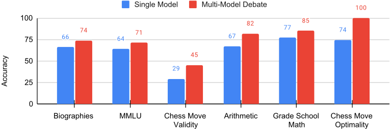
在参照其他智能体的回答后显得合理的答案。由此形成的模型集体（quorum）能够在提出最终答案之前，同时持有并维持多条推理链和多个可能的答案。
我们发现，在六项涵盖推理、事实性与问答的任务上，我们的辩论方法优于零样本思维链 [11] 和反思（reflection）[26, 18] 等单模型基线。同时使用多个模型智能体与多轮辩论对于取得最佳性能十分重要。给定一个初始查询，我们发现尽管各模型实例属于同一模型类别，它们仍会提出多种多样的答案（不过我们也研究了混合不同模型类型的情况，例如 chatGPT [21] 与 Bard [23]）。在经过辩论并审视其他模型实例的回答之后，我们发现整个群体几乎总会收敛到一个单一且更准确的共同答案。辩论结果也不太可能包含模型内部本就不确定的不实事实。这是因为随着辩论的推进，各模型实例往往会在不确定的事实上产生分歧，并将其从答案中省略（图 7）。最后，我们发现辩论并不仅仅是放大模型集体中已有的某一个正确答案——我们观察到许多案例，其中所有模型最初都做出了错误的预测，但随着辩论的推进最终得出了正确答案（图 4、11）。
我们对所有任务均采用相同的方法论与提示模板，并且只需要以黑盒方式访问语言模型的生成结果——无需任何模型内部信息（如似然值或梯度）。这使得我们的方法可以与常见的公开模型服务接口配合使用。该方法还与其他模型生成改进手段（如检索或提示工程）相互正交（事实上，我们将辩论方法与零样本思维链（chain-of-thought, CoT）相结合）。尽管辩论过程成本更高，需要多个模型实例和多轮交互，但它能够得到显著改善的答案，并且可用于生成额外的模型训练数据，从而有效地构建模型自我改进的循环。
为了帮助评估我们的方法对事实准确性的影响，我们引入了一个新的基准测试（benchmark）和数据集，用于评估著名计算机科学家传记的事实准确性。我们发现，当代语言模型尤其容易产生事实错误的传记幻觉，经常错误地呈现相关机构和日期。此外，这些事实在不同的语言模型实例之间往往并不一致。通过要求模型在其各自答案之间达成共识，这类不一致的事实可以被移除或纠正。
总而言之，我们的工作贡献如下。首先，我们提出了一种新颖的方法，利用模型之间的多智能体（multi-agent）辩论过程来提升当代语言模型的事实正确性与推理准确性。其次，我们引入了一个新的关于事实正确性的基准测试，当代语言模型在该测试上表现不佳。最后，我们在语言生成任务上评估了辩论流程的性能，考察维度包括智能体数量、辩论轮数，以及在六个不同的推理与事实准确性任务上引出此类行为的提示。
我们提出了一种通过多智能体辩论生成语言回复的方法。我们在第 2.1 节中概述了我们的方法，并在第 2.2 节中进一步讨论辩论过程中向共识的收敛。我们方法的整体概览如图 2 所示。
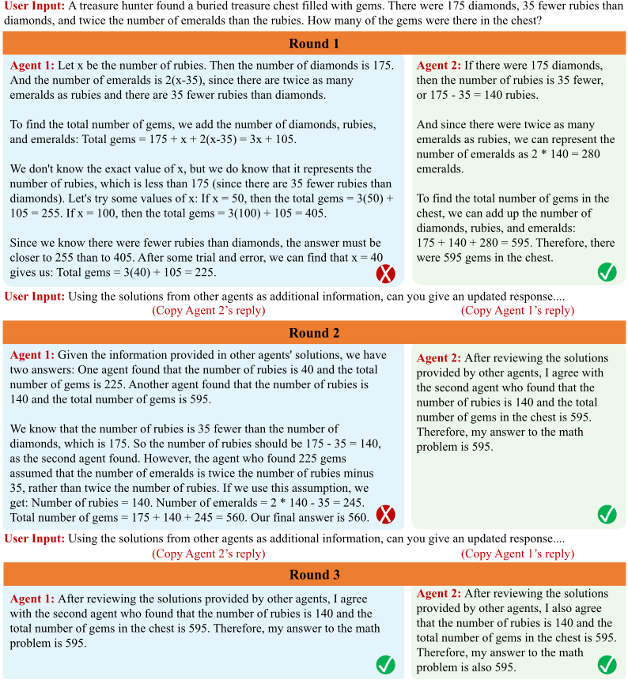
设想你在考试中解答下面这道数学题时的工作过程：“边长为 3、4、5 的三角形的面积是多少？”。在其中一条解题思路中，你可能会意识到这些边长恰好对应一个直角三角形，从而直接计算出面积为 0.5 × 3 × 4 = 64。为了确保答案正确，你随后可能会尝试用另一种方法求解该问题：利用余弦定理估计三角形中的一个角 θ，再用公式 0.5 × 3 × 4 × sin(θ) 求出面积，从而得到该考题的另一个答案。
当这些思路得出相同的答案时，你对该答案的信心便会增强。相反，当这些答案彼此不同时，各条思路可能会在头脑中展开一场“辩论”过程：你会仔细交叉审视每条思路的推理和假设，并不断改进解法，直至得出一致的答案。
类似地，设想为一位历史人物撰写传记。为了确保传记的事实性，你可能会针对每个事实查阅多个不同的来源。在各来源中相互一致的事实会增强你对该事实的信心；相反，相互不一致的事实则需要在各来源之间进行仔细的交叉核对，以确定最终一致的数据。
| Debate Length | Prompt |
|---|---|
| Short | " These are the solutions to the problem from other agents: [other answers] Based off the opinion of other agents, can you give an updated response . . . " |
| Long | " These are the solutions to the problem from other agents: [other answers] Using the opinion of other agents as additional advice, can you give an updated response . . . " |
| Debate Length | Prompt |
为了模拟上述多线程推理过程和多来源事实性核查过程，我们提出让答案的生成遵循多个大语言模型实例之间的多智能体辩论过程。给定一个问题，多个以大语言模型副本形式表示的智能体各自生成该问题的答案。每个回复都充当一种可能的思维过程或信息来源，智能体可以对其加以重新审视，以找到一致的最终答案。
在不同智能体生成初始回复之后，我们会启动一轮智能体之间的辩论。其他智能体的各个回复会被拼接起来，作为上下文提供给每个智能体，并指示每个智能体基于这些回复构建新的回复。因此，每个语言智能体既要核查其他智能体所给出的一组回复，又要根据其他智能体的回复来改进自己的回复。为了提升性能，我们会在多个轮次中迭代地重复这一辩论过程。
具体而言，我们首先提示每个智能体独立求解给定的问题或任务。在每个智能体生成回复之后，我们向每个智能体输入一个共识提示，如图 3 所示，其中指示每个智能体根据其他智能体的回复来更新自己的回复。随后，可利用每个智能体更新后的回复，反复给出这一由此产生的共识提示。我们在图 2 中展示了这一多智能体辩论过程的概览。
需要注意的是，我们提出的方法与现有的语言模型提示方法是以正交的方式运作的。给定一个问题，我们可以应用额外的语言模型提示技术，通过引出更多更详细的回复来进一步改进我们的辩论流程。我们在图 6 中展示了我们的方法与现有语言模型提示方法之间的协同效应，并在评估中直接应用了零样本思维链（zero-shot chain-of-thought，CoT）推理。
在多轮辩论之后，我们如何确保一组语言模型 Agent 会收敛到最终的共识答案？一般而言，辩论可以被视为一种多智能体博弈，其收敛性并没有保证。然而从经验上看，我们发现语言模型在经过多轮辩论后能够收敛到一个共同的答案（图 4）。
我们发现，通过不同的提示来改变语言模型对自身输出（相对于其他模型所生成输出）的信任程度，可以控制辩论的持续时间。我们在图 3 中展示了下面两个提示，我们用它们来使语言模型之间产生不同的辩论持续时间，并在图 12 中展示了此类提示的效果。总体而言，我们发现那些鼓励模型基于自身解法变得更加“固执”的提示会导致更长的辩论和更好的最终解法。总的来说，我们观察到语言模型 Agent 相对比较“随和”，这可能是指令微调或基于人类反馈的强化学习所带来的结果 [22]。
在我们的实验中，我们评估了我们的多智能体辩论（multiagent debate）流程，并回答以下问题：（1）多智能体辩论在多大程度上提升了推理能力？（2）多智能体辩论在多大程度上提升了事实有效性？（3）哪些设计选择使多智能体辩论能够提升语言生成性能？
我们首先评估多智能体辩论在多大程度上能够改善语言模型的底层推理过程。
任务。我们在三个难度递增的推理任务上评估我们的方法：
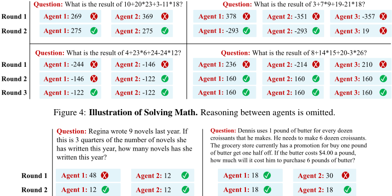
在算术和 GSM8K 任务中，我们报告最终答案的准确率；在国际象棋走子预测任务中，我们报告由 Stockfish 估计的预测走子的兵值分数（优势）。更多细节见附录。
基线。我们将我们的方法与三种用于生成推理问题回答的替代方法进行比较。首先，我们让智能体直接生成回答（单智能体）。其次，我们考虑让语言模型生成回答，然后对所生成的回答进行“自我反思”（self-reflect）[26, 18]。最后，我们考虑使用多个智能体生成回答并进行多数投票（majority voting）[15, 3]。由于我们实验的重点是验证多智能体辩论的有效性，我们在所有评估中使用相同的起始提示（prompt）和语言模型来运行基线方法与我们的方法。我们在零样本（zero-shot）设置下评估模型，所用提示见论文附录。
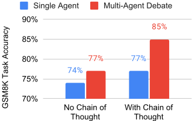
在所有实验中，我们均使用基于 chatGPT 的语言模型 [21]，只有图 11 中的实验例外，在该实验中我们比较了多个语言模型。
由于计算开销较大，我们在各基准测试（benchmark）上评估我们的方法时，主要使用三个智能体进行两轮辩论；不过我们发现，增加智能体数量和辩论轮数都能带来进一步提升（图 10）。更多评估细节见附录。
定量结果。在表 1 中，我们报告了各方法在算术、小学数学和国际象棋推理任务上的结果。在每项任务中，我们观察到，利用多个不同的智能体来生成解答，其性能优于使用单个语言模型智能体生成解答。同时，我们还看到，反思（reflection）——即让语言模型对其早期生成的内容进行批判——通常能带来适度的性能提升。多智能体辩论可被视为反思与多智能体生成的结合，在每项任务上都带来了推理能力的大幅提升。
| Model | Arithmetic (%) ↑ | Grade School Math (%) ↑ | Chess ( ∆ PS) ↑ |
|---|---|---|---|
| Single Agent | 67.0 ± 4.7 | 77.0 ± 4.2 | 91.4 ± 10.6 |
| Single Agent (Reflection) | 72.1 ± 4.5 | 75.0 ± 4.3 | 102.1 ± 11.9 |
| Multi-Agent (Majority) | 69.0 ± 4.6 | 81.0 ± 3.9 | 102.2 ± 6.2 |
| Multi-Agent (Debate) | 81.8 ± 2.3 | 85.0 ± 3.5 | 122.9 ± 7.6 |
| Model | Arithmetic (%) ↑ | Grade School Math (%) ↑ | Chess ( ∆ PS) ↑ |
提示：给出 David S. Johnson 的要点式生平简介，突出其作为计算机科学家的贡献与成就，每条事实以换行符分隔。
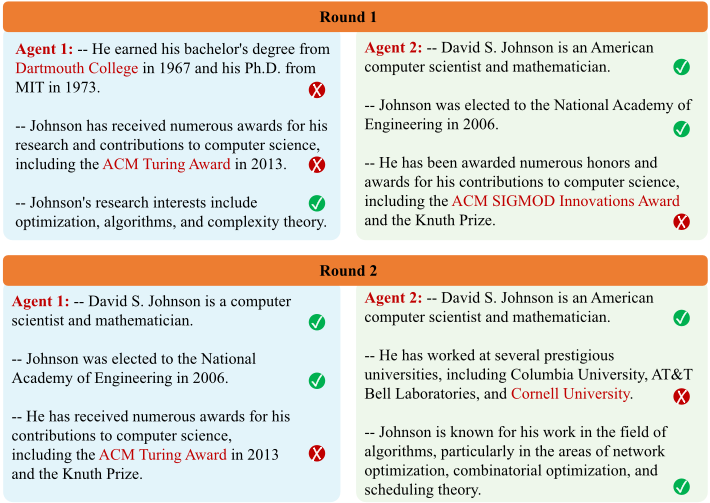
定性结果。在图 4 和图 5 中，我们提供了模型之间辩论过程的定性示例。有趣的是，我们发现存在这样的情况：所有模型最初都给出了错误的回答，但随着智能体相互批判彼此的推理，辩论的结果仍然得到了正确答案。因此，我们辩论的目的不仅仅是放大正确答案——所有模型最初都可能是错的，但可以通过辩论过程得出正确答案。
与其他推理方法的兼容性。我们的多智能体生成流程与其他专注于单智能体生成的提示方法呈正交关系。在图6中，我们展示了在GSM8K上使用与不使用零样本思维链（chain-of-thought, CoT）提示[11]时多智能体辩论的性能表现。在这两种设置下，多智能体生成都能带来收益。
接下来，我们评估多智能体辩论能在多大程度上提升语言模型的底层事实性。
任务。我们在三种不同的设置下评估语言模型的事实性：
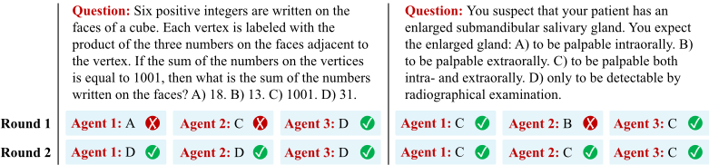
| Model | Biographies | MMLU | Chess Move Validity |
|---|---|---|---|
| Single Agent | 66.0 ± 2.2 | 63.9 ± 4.8 | 29.3 ± 2.6 |
| Single Agent (Reflection) | 68.3 ± 2.9 | 57.7 ± 5.0 | 38.8 ± 2.9 |
| Multi-Agent (Debate) | 73.8 ± 2.3 | 71.1 ± 4.6 | 45.2 ± 2.9 |
| Model | Biographies | MMLU | Chess Move Validity |
基线。我们使用与3.1节相同的基线。多智能体（多数投票）方法在该设置下并不直接适用，因为各个回复之间不易相互比较，因此我们在该设置中省略了与多数投票（majority voting）的基线比较。
结果。我们在表2中分析了各方法的性能。我们发现，基于反思（reflection）的方法在事实性设置下表现较差。相比之下，辩论在该设置下同样取得了最佳性能，并显著优于各个基线。我们在图7中展示了多个Agent在传记任务上的辩论过程，并在图8中展示了在MMLU上的辩论过程。我们发现，多智能体辩论能够改进这些要点，并最终收敛到在各Agent之间更为一致的要点上。
我们发现，当底层语言模型对问题不确定时，不同的语言Agent往往会给出不同的答案。然而，直接询问每个Agent对答案的置信度[10]，会导致其对每个答案都给出较高的置信度评估。但是，当要求这些不同的语言Agent相互交流时，每个Agent都会迅速改变自己的观点，转向一个更为准确的共识答案。我们在图9中对此进行了说明。有趣的是，我们发现对于语言模型有把握的事实（即同一模型的多个实例都给出了相同的答案），很难说服某个Agent改变其观点，这表明“易被说服程度”或许可以作为评估事实置信度的一种方法。
最后，我们分析多智能体辩论如何改进语言模型中底层的语言生成过程。
Agent数量。首先，我们分析辩论中Agent数量的影响。在图10(a)中，我们增加辩论中使用的Agent数量，同时将辩论长度固定为二。在算术任务上，性能随Agent数量的增加而单调提升。对于更大的Agent数量，由于上下文长度错误，我们首先使用chatGPT对所有Agent的回复进行汇总，而不是直接拼接回复。
辩论轮数。接下来，我们分析多智能体辩论中辩论轮数的影响。在图10(b)中，我们增加Agent之间的辩论长度，同时将Agent数量固定为三个。我们发现在算术任务上，性能同样随辩论长度的增加而单调提升。然而，我们发现超过四轮的额外辩论轮数所带来的最终性能与4轮辩论相近。
提示：计算机科学家Tomas Lozano-Perez出生于哪个国家？
Agent 1：著名计算机科学家Tomas Lozano-Perez出生于西班牙。
Agent 2：著名计算机科学家Tomas Lozano-Perez出生于古巴哈瓦那。
Agent 2：对于相互矛盾的回复，我深表歉意。经过进一步查证，我可以确认Tomas Lozano-Perez出生于古巴哈瓦那。✓
Agent 1：对于造成的困惑，我深表歉意。经过进一步查证，我可以确认著名计算机科学家Tomas Lozano-Perez实际上出生于古巴。感谢您让我注意到这一点。
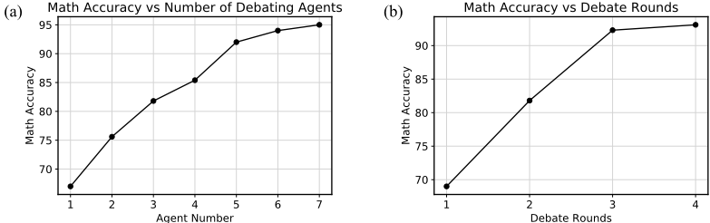
辩论长度对准确率的影响。如第2.2节所述，Agent之间辩论的底层收敛时间可以通过鼓励Agent坚持自身观点的程度来控制。在图12中，我们考察了图3中讨论的短提示与长提示的效果。我们发现，使用较长提示的辩论收敛到正确答案的速度较慢，但最终也能就正确答案达成更好的共识。我们在图14中提供了对Agent之间共识的分析。
使用不同的初始化提示。在我们的实验中，我们对所有Agent使用相同的提示。我们
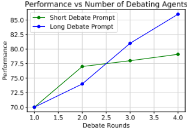
还考虑了使用不同问题的效果，即在MMLU数据集上，我们首先指示每个语言模型扮演不同的角色（教授、医生、数学家）。我们发现，使用不同的Agent使MMLU上的性能从71.1提升到74.2，这表明通过不同的初始化提示可以获得进一步的收益。
总结（Summarization）。在本文的大多数实验中，我们直接将其他Agent的回复拼接起来，作为某个Agent生成新回复的上下文，但当参与辩论的Agent数量变大时，这种做法的代价很高。作为替代方案，我们可以先将所有其他Agent的回复总结为单一回复，并在每一轮将其提供给该Agent，以实现更高效的辩论。我们在图10中应用了这一策略，从而支持在辩论中使用五个或更多Agent。在图13中，我们分析了该方法与直接拼接其他Agent回复相比的效果。我们发现这提升了辩论的性能，这表明总结是另一种可以进一步改进多智能体辩论的工具。
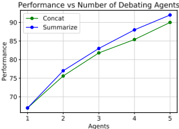
利用不同的语言模型 我们现有的辩论结果是使用chatGPT语言模型的多个实例报告的。我们进一步评估 问题：Carla正在下载一个200 GB的文件。通常她能以2 GB/分钟的速度下载，但在下载进度达到40%时，Windows强制重启以安装更新，这需要20分钟。然后Carla必须从头开始重新下载。下载该文件需要多长时间？
8
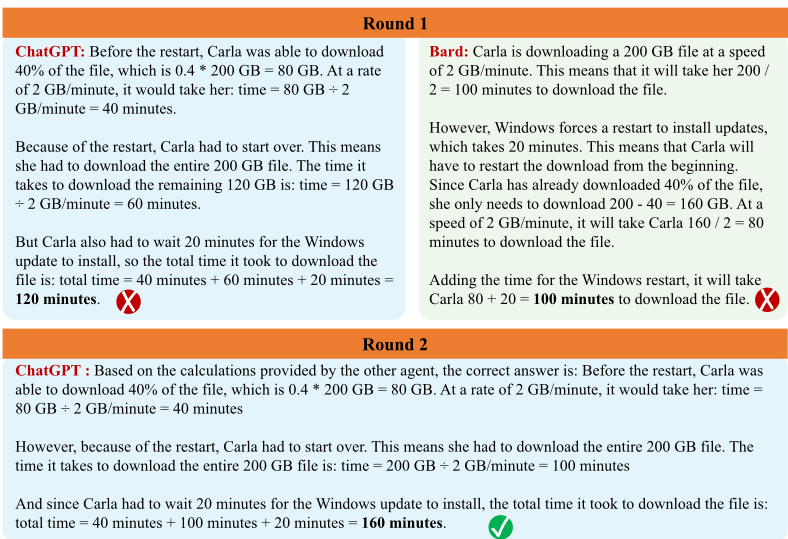
使用两种不同语言模型的影响，其中我们让chatGPT和Bard [23]语言模型就一组20道GSM8K数学题相互辩论。在这一组题目中，我们发现多智能体辩论提升了两者的性能：Bard解出了11道题，chatGPT解出了14道题，而联合多智能体辩论解出了17道题。我们在图11中定性地展示了Agent之间的一次辩论。虽然两个Agent最初对该问题都给出了错误的答案，但chatGPT能够利用Bard给出的错误回复来生成最终的正确答案。
语言模型中的推理与事实性。大量研究工作探索了如何在语言模型中实现推理与事实性。为提升推理能力，已有方法依赖于提示技术，例如草稿本（scratchpad）[20]、验证 [3]、思维链（chain-of-thought, CoT）示例 [30, 11, 25]，以及中间自我反思 [26, 18] 和微调 [13, 24, 31]。为提升事实性，已有方法依赖于训练技术，例如基于人类反馈的强化学习（RLHF）[33, 16, 2]、对真实性数据集进行剪枝 [12]、外部知识检索 [7]，以及基于似然估计的无训练方法 [10]。
我们的工作提供了一种利用多智能体辩论在语言模型中获得推理与事实性的替代途径，其只需要对语言生成器的黑盒访问。先前的工作也探索了如何在不同模型之间进行多数投票 [15, 3, 29, 28]，而在这项工作中，我们利用语言模型的能力来组合不同的答案。与我们的工作最相似的是，Irving 等人 [9] 也提出了一种辩论流程，用于验证强大 AI Agent 的准确性与安全性。与我们的方法不同，在他们的工作中，Agent 被要求交替地为某个输入提供证明，而人类则负责评估这些辩论并判定安全性。
组合式生成。我们的工作也与现有专注于通过组合不同模型来进行文本生成的工作相关 [4, 17, 32, 1, 5]。与我们的工作最相似的是，[14, 32] 提出将多个不同的大型预训练模型组合在一起以进行多模态推理。相比之下，在我们的工作中，我们旨在利用不同语言模型之间的通信，使语言模型实现更有效的推理与事实性。
9
在本文中，我们提出了一种利用多智能体辩论来提升语言模型性能的正交方法。我们发现，该方法在多种不同的推理与有效性语言建模任务上都简单而有效。
局限性。与其他提示技术相比，我们的多智能体辩论流程计算开销更大，因为它既需要多次语言生成，又需要一个底层的辩论流程。然而，我们认为该方法可以被视为一种生成额外数据的手段，这些数据可通过蒸馏回馈给原始基础模型，从而实现其自我改进。
此外，我们观察到，随着辩论持续时间的增长，当前的语言模型有时难以完整处理整个辩论输入，通常只关注最近生成的几轮内容。我们相信，借助具备更长上下文窗口和更强性能的语言模型，或通过对辩论早期部分进行摘要，这一性能问题将得到缓解。
最后，我们发现，尽管辩论通常会收敛为单一的最终答案，但这些答案并不一定正确。即使答案不正确，语言模型仍会自信地断言其答案是正确的，并且与所有其他 Agent 的回复一致。我们认为，这一结果部分源于语言模型（LMs）在生成回复时未能正确表达其不确定性；我们还相信，其他能够改善这一性能的正交方法将进一步提升多智能体辩论的效果。
在本附录中，我们在 A.1 节提供了对主论文中所用辩论的额外分析与可视化。我们还在 A.2 节中提供了每个数据集的详细实验细节。
Consensus Between Agents. In Figure 14, we illustrate the consensus between agents using either short or long consensus prompts discussed in Figure 3. The use of debate prompts that encourage agents to adapt more to the opinions of other agents improves consensus.
Additional Qualitative Visualizations. We added additional qualitative visualizations of the debate process. In Figure 16, Figure 17, Figure 18, Figure 19, Figure 20, we illustrate debates between agents in the GSM8K dataset which result in the correct answer. In Figure 21, Figure 22, Figure 23, we further illustrate debates in GSM8K which lead to the incorrect answer. We further provide an example illustration of debate in
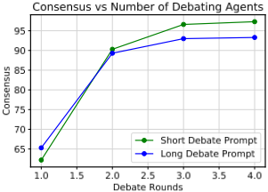
arithmetic in Figure 24, arithmetic with summarization of individual responses of agents in Figure 25, MMLUin Figure 26, a debate with the full contents biographies in Figure 27, and debate in chess in Figure 28. In general, we found that debate improved the performance of final generated answers, though sometimes answers would converge to the incorrect value.
We provided detailed evaluation details for each setting in the paper. We run all experiments using the gpt-3.5-turbo-0301 model. We provide a table listing the prompts used to prompt models and initialize debate in Table 15.
Arithmetic. To evaluate the arithmetic task, we generated six random integers for each task between 0 and 30. We then evaluated the extent to which the correct integer answer was correctly obtained. We evaluated models on one hundred generated arithmetic tasks.
Grade School Math. To evaluate the GSM8K task, we evaluated the accuracy at which models were able to obtain the final correct answer, as extracted from a box. We evaluated models on one hundred grade school math problems.
Chess. To evaluate the chess reasoning task, we used chess games from https://www.pgnmentor. com/players/Adams.zip . We asked chatGPT to predict the next move for white to move at turn 14 and reported the relative Stockfish pawn score with search depth 20 after executing the suggested move from chatGPT. We evaluated models on three hundred selected chess games.
Biographies. To evaluate the biographies task, we compare each generated bullet point biography for a person with a ground truth set of facts about the person extracted from Wikipedia. We iteratively loop through each ground truth fact, and validate the extent to which the generated biography matches a particular bullet by prompting chatGPT with the prompt: Consider the following biography of <person>: <generated biography> Is the above biography above consistent with the fact below? <ground truth bullet> Give a single-word answer, yes, no, or uncertain. We then evaluate and report the percentage of ground bullets that chatGPT returns either yes or no on. We ignored ground truth bullets that chatGPT returns returned uncertain.
We found this evaluation metric provided a fast way to evaluate how relatively correct a generated bullet point biography is. However, we found that generated facts could contain incorrect information that was not captured in the ground truth bullet and thus could not be validated through this metric. Nevertheless, we believe this evaluation scheme estimates the relative accuracy of a generated biography.
MMLU. To evaluate MMLU, we measured the accuracy in which models were able to select the correct multiple-choice answer in each problem. We evaluated models on one hundred selected MMLUquestions randomly distributed across each of the subject areas.
13
| 0 | 1 | 2 |
|---|---|---|
| Task | Type | Prompt |
| Arithmetic | Starting | What is the result of {}+{}*{}+{}-{}*{}? Make sure to state your answer at the end of the response. |
| Arithmetic | Debate | These are the recent/updated opinions from other agents: <other agent responses> Use these opinions carefully as additional advice, can you provide an updated answer? Make sure to state your answer at the end of the response. |
| GSM8K | Starting | Can you solve the following math problem? <Problem> Explain your reasoning. Your final answer should be a single numerical number, in the form \boxed{{answer}}, at the end of your response. |
| GSM8K | Debate | These are the solutions to the problem from other agents: <other agent responses> Using the solutions from other agents as additional information, can you provide your answer to the math problem? The original math problem is <Problem>. Your final answer should be a single numerical number, in the form \boxed{{answer}}, at the end of your response. |
| Chess | Starting | Here is the current sequence of moves in a chess game: <moves>. What is the best chess move I should execute next? Give a single move suggestion of the form 14. <XXX> and make sure the chess move is valid in the current board state. |
| Chess | Debate | Here are other chess move suggestions from other agents: <other agent responses> Using the chess suggestions from other agents as additional advice and your earlier generated solution, can you give me your updated thoughts on the best next chess move I should play given the chess sequence ? Give a single move suggestion of the form 14. <XXX> and make sure the chess move is valid in the current board state. |
| Biographies | Starting | Give a bullet point biography of highlighting their contributions and achievements as a computer scientist, with each fact separated with a new line character. |
| Biographies | Debate | Here are some bullet point biographies of <person> given by other agents: <other agent response> Closely examine your biography and the biography of other agents and provide an updated bullet point biography. |
| MMLU | Starting | Can you answer the following question as accurately as possible? : A) , B) , C) , D) Explain your answer, putting the answer in the form (X) at the end of your response. |
| MMLU | Debate | These are the solutions to the problem from other agents: <other agent responses> Using the reasoning from other agents as additional advice, can you give an updated answer? Examine your solution and that other agents. Put your answer in the form (X) at the end of your response. |
| Chess Validity | Starting | Given the chess game , give one valid destination square for the chess piece at . State the destination square in the form (X), where X follows the regex [a-h][1-8], for example (e5). Give a one line explanation of why your destination square is a valid move. |
| Chess Validity | Debate | Here are destination square suggestions from other agents: <other agent responses> Can you double check that your destination square is a valid move? Check the valid move justifications from other agents. State your final answer in a newline with a 2 letter response following the regex [a-h][1-8]. |
| 0 | 1 | 2 |
Chess Validity. To evaluate chess validity, we consider the BIG-Bench Chess-State Tracking Benchmark [27], where we used the hardest reported task in the benchmark synthetic_short . Each generated answer was deemed correct as long as it was one of the valid answers in the sequence. We evaluated models of one hundred selected chess validity tasks.
14
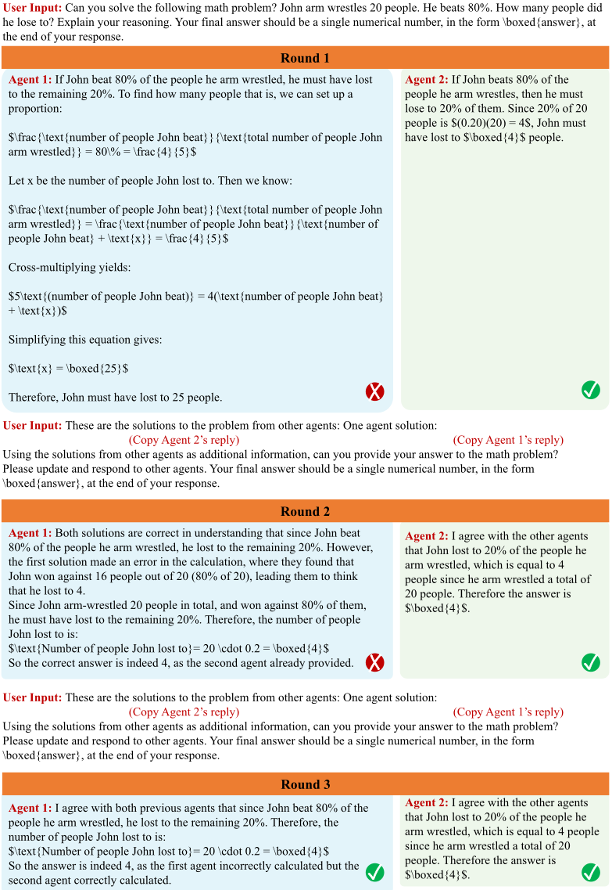
15
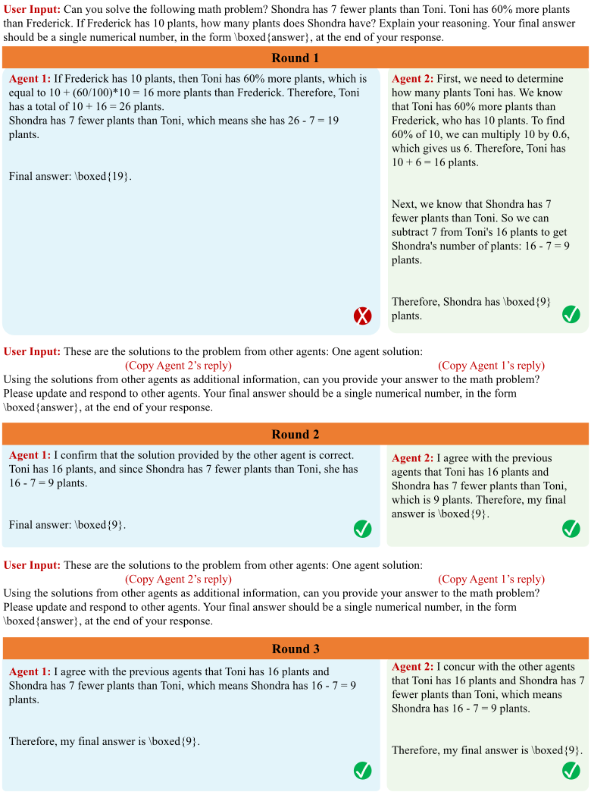
16
用户输入：你能解决下面的数学问题吗？Bob 负责一家大型酒店的洗衣工作。每个房间有两张床单、一床被子，枕套的数量是床单的两倍，毛巾的数量是枕套的两倍。80 个房间里共有多少件待洗衣物？请解释你的推理过程。你的最终答案应当是一个单独的数字，以 \boxed{answer} 的形式放在回答的末尾。
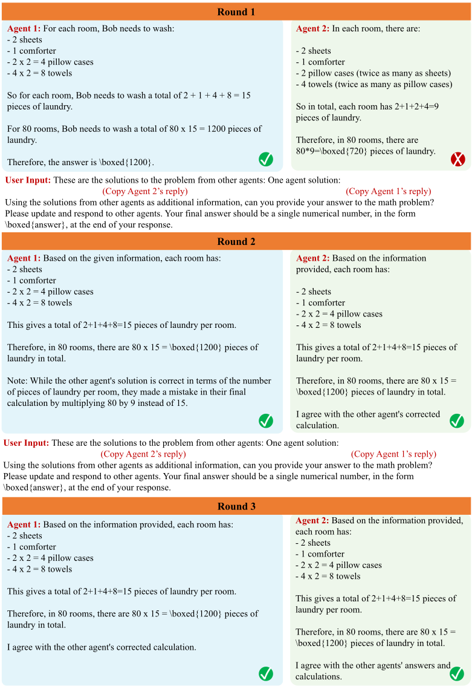
17
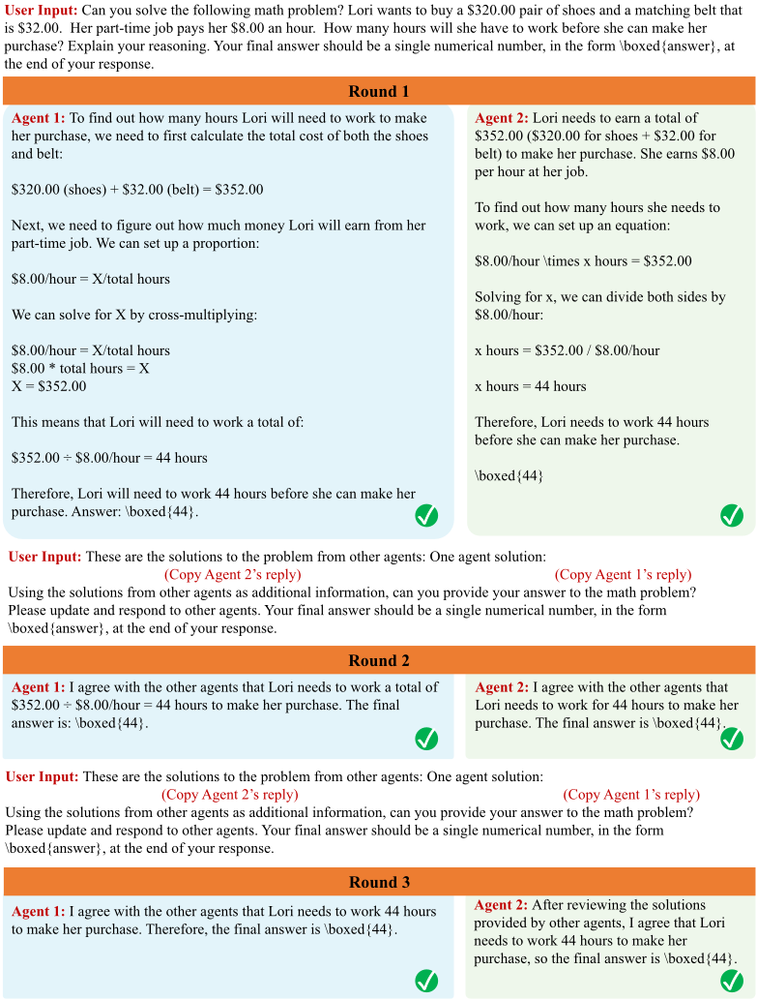
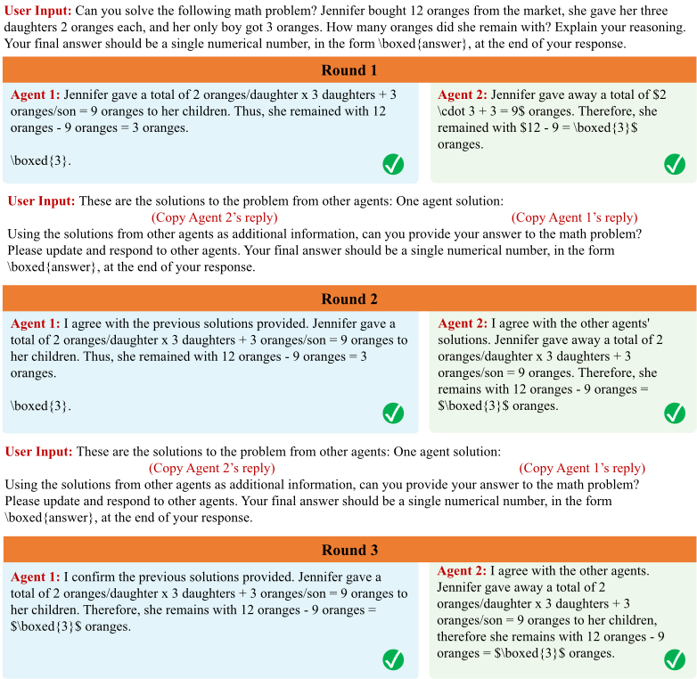
用户输入：你能解决下面的数学问题吗？一家玩具制造商接到一份 400 个玩具的订单。有 5 名工人可以处理该订单。其中 2 名工人每小时生产 6 个玩具，另外 2 名工人每小时生产 4 个玩具。他们都在 10 小时的班次中处理该订单，到班次结束时，制造商还需要再生产 20 个玩具才能发货。第五名工人每小时生产多少个玩具？请解释你的推理过程。你的最终答案应当是一个单独的数字，以 \boxed{answer} 的形式放在回答的末尾。
第 1 轮 Agent 2：设两组工人（每小时生产 6 个玩具的工人和每小时生产 4 个玩具的工人）各自工作的小时数分别为 x 和 y。那么我们有如下方程组：2(6x) + 2(4y) = 400 + 20 12x + 8y = 210（方程 1）x + y = 10（方程 2）化简方程 2，得到：y = 10 - x 将其代入方程 1，得到：12x + 8(10 - x) = 210 4x = 50 x = 12.5 因此，前 4 名工人总共生产 2(6)(12.5) + 2(4)(10 - 12.5) = 150 个玩具。由于要完成订单还差 20 个玩具，第五名工人必须每小时生产 20/10 = 2 个玩具。因此，第五名工人每小时生产 \boxed{2} 个玩具。Agent 1：我们先求出这四名工人在 10 小时内生产的玩具总数。每小时生产 6 个玩具的两名工人总共生产 6 x 2 x 10 = 120 个玩具。另外两名每小时生产 4 个玩具的工人总共生产 4 x 2 x 10 = 80 个玩具。他们合计生产 120 + 80 = 200 个玩具。由于制造商要完成订单还需要 20 个玩具，我们知道 5 名工人总共需要生产 400 + 20 = 420 个玩具。减去已经生产的 200 个玩具，还剩下 420 - 200 = 220 个玩具需要由第五名工人来生产。由于工人们已经工作了 10 小时，我们可以建立方程：第五名工人每小时生产的玩具数 x 10 = 220 求解第五名工人每小时生产的玩具数，得到：第五名工人每小时生产的玩具数 = 220/10 = 22 因此，第五名工人必须每小时生产 \boxed{22} 个玩具。✗ ✗
请将其他智能体给出的解答作为附加信息，你能给出你对这道数学题的答案吗？
请更新并回应其他智能体。你的最终答案应为单个数字，以 \boxed{answer} 的形式置于回复的末尾。
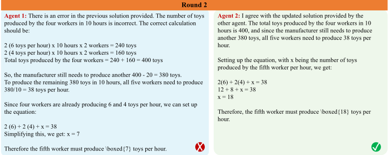
用户输入：以下是其他智能体对该问题的解答：某位智能体的解答：（复制 Agent 2 的回复） （复制 Agent 1 的回复）
请将其他智能体给出的解答作为附加信息，你能给出你对这道数学题的答案吗？
请更新并回应其他智能体。你的最终答案应为单个数字，以 \boxed{answer} 的形式置于回复的末尾。
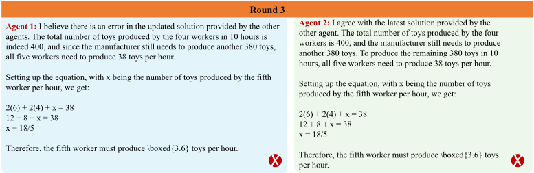
20
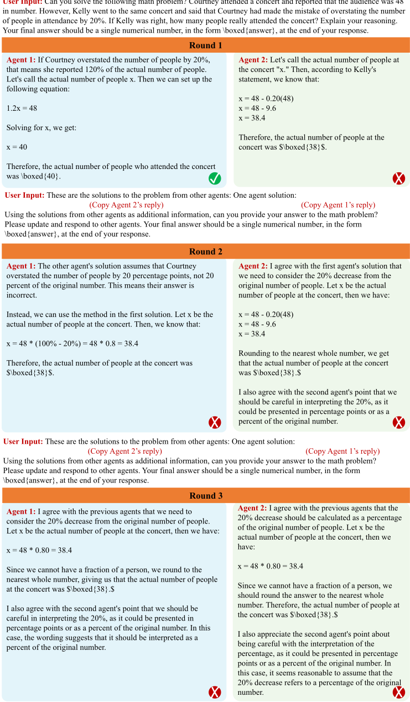
21
| Round 1 | Round 1 |
|---|---|
| Agent 1: If Jack collected twice as many dishes as socks, then he collected 60/2=<<60/2=30>>30 socks. Peter has half times as many dishes as Jack, meaning he has 60/2=<<60/2=30>>30 dishes. If Peter has twice as many socks as Jack, then he has 2*30=<<2*30=60>>60 socks. Together, Peter and Jack have 60+30+30=<<60+30+30=120>>120 socks and dishes. Answer: | Agent 2: If Jack has collected twice as many dishes as socks and he collected 60 dishes, then he has 60/2 = 30 socks. Peter has twice as many socks as Jack, which means he has 2*30 = 60 socks. |
| \boxed{120}. | Peter also has half as many dishes as Jack, which means he has 60/2 = 30 dishes. |
| ✗ | The total number of dishes and socks they have together is 60+30+30 = \boxed{120}. ✗ |
| Round 1 | Round 1 |
| Round 2 | Round 2 |
|---|---|
| Agent 1: I agree with the solutions provided by the other agents. If Jack collected 60 dishes and he collected twice as many dishes as socks, then he collected 60/2 = 30 socks. | Agent 2: I agree with the solutions provided by the other agents. The total number of socks and dishes they have together is 120. Therefore, my answer is \boxed{120}. |
| If Peter has twice as many socks as Jack, then he has 2*30 = 60 socks. | |
| If Peter has half as many dishes as Jack, then he has 60/2 = 30 dishes. | |
| Therefore, the total number of dishes and socks they have together is 60+30+30 = \boxed{120}. ✗ | ✗ |
| Round 2 | Round 2 |
| Round 3 | Round 3 | Round 3 |
|---|---|---|
| Agent 1: I agree with the solutions provided by the other agents. | Agent 1: I agree with the solutions provided by the other agents. | Agent 2: I agree with the solutions provided by the other agents. Therefore, the total number of socks and dishes they have together is 120. My final answer is \boxed{120}. |
| If Jack collected 60 dishes and he collected twice as many dishes as socks, then he collected 60/2 = 30 socks. | If Jack collected 60 dishes and he collected twice as many dishes as socks, then he collected 60/2 = 30 socks. | |
| If Peter has twice as many socks as Jack, then he has 2*30 = 60 socks. | If Peter has twice as many socks as Jack, then he has 2*30 = 60 socks. | |
| If Peter has half as many dishes as Jack, then he has 60/2 = 30 dishes. | If Peter has half as many dishes as Jack, then he has 60/2 = 30 dishes. | |
| Therefore, the total number of dishes and socks they have together is 60+30+30 = \boxed{120}. | ✗ | ✗ |
| Round 3 | Round 3 | Round 3 |
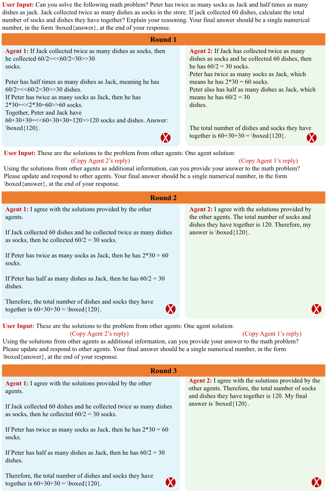
22
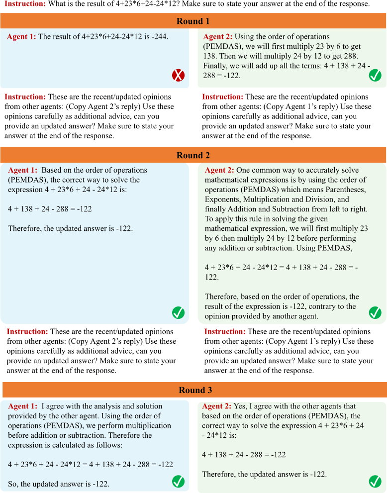
23
指令：4+23*6+24-24*12 的结果是多少？请务必在回复的末尾给出你的答案。
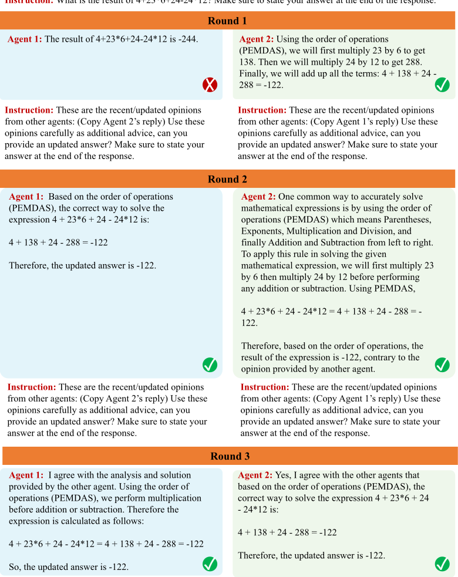
24
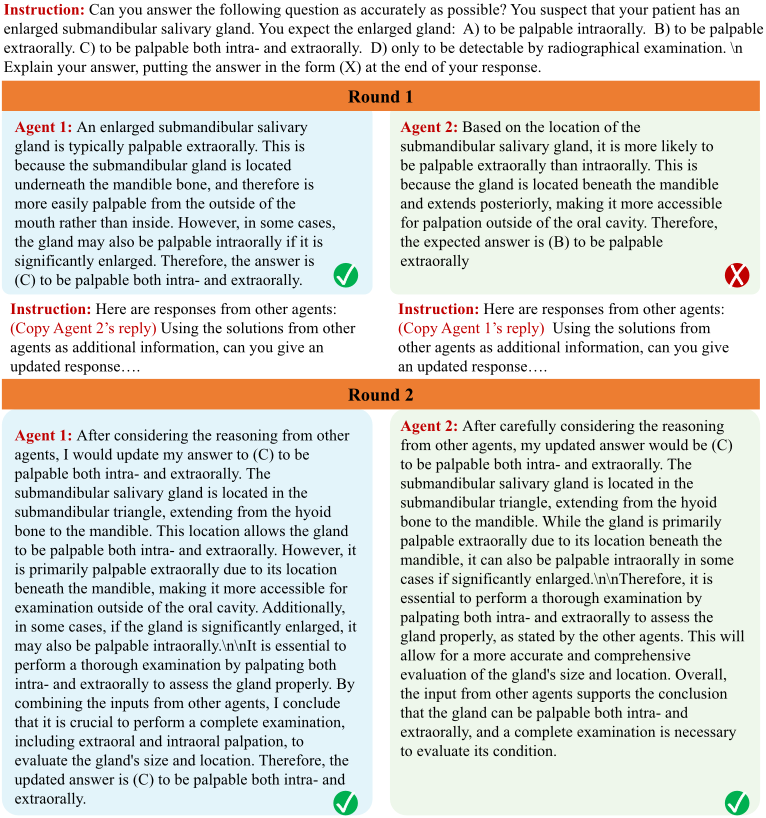
指令：请给出 Stephan R. Bourne 的要点式生平简介，突出其作为计算机科学家的贡献与成就，每条事实之间用换行符分隔。
| Round 1 | Round 1 |
|---|---|
| Agent 1: - Stephen R. Bourne is a British-born American computer scientist. - He is best known for creating the Bourne shell (sh) for the Unix operating system in 1979.\n- The Bourne shell was the default Unix shell for many years and is still in use today. - Bourne also worked on the development of the UNIX System III and IV operating systems. - He later joined AT&T Bell Laboratories, where he worked on the UNIX System V operating system and its derivatives. - Bourne was awarded the ACM Software System Award in 1983 for his work on the Bourne shell. - He is also a recipient of the USENIX Lifetime Achievement Award (2001) and the IEEE Computer Pioneer Award (2010). - Bourne is now retired and continues to be involved in the computer science community. | Agent 2: . - Stephen R. Bourne is a computer scientist known for his development of the Unix shell, or command-line interface, known as the Bourne shell. - He earned a bachelor's degree in mathematics and a doctorate in computer science from Cambridge University. - Bourne worked at Bell Labs, where he helped to create the Unix operating system and its command- line interface. - In addition to the Bourne shell, he also created the Bourne-Again shell (bash) and was involved in the creation of the Korn shell. - Bourne was awarded the USENIX Lifetime Achievement Award in 1999 and was elected as a Fellow of the Association for Computing Machinery in 2013. - He has authored and co-authored numerous technical papers and books, including "The Unix System," a widely used textbook on Unix programming. |
| Round 1 | Round 1 |
指令：以下是其他智能体给出的一些要点式生平简介：（复制 Agent 2 的回复）请将这些生平简介作为附加信息，你能给出一份更新后的要点式生平简介。
指令：以下是其他智能体给出的一些要点式生平简介：（复制 Agent 1 的回复）请将这些生平简介作为附加信息，你能给出一份更新后的要点式生平简介。
26
指令：以下是一局国际象棋对局中当前的下法序列：1. e4 c6 2. d4 d5 3. Nd2 Qc7 4. Bd3 dxe4 5. Nxe4 Bf5 6. Nf3 Nd7 7. O-O e6 8. c4 Bg6 9. d5 Bxe4 10. Bxe4 Ndf6 11. Re1 Nxe4 12. Rxe4 Nf6 13. Re1 O-O-O 。我下一步应该执行的最佳国际象棋走法是什么？请给出一个形如 14. <XXX> 的单一走法建议，并确保该走法在当前棋盘状态下是有效的。
| Round 1 | Round 1 |
|---|---|
| Agent 1: 14. dxe6 | Agent 2: 14. Be3 |
| Instruction: Using the solutions from other agents as additional information. (Copy Agent 2's reply) | Instruction: Using the solutions from other agents as additional information. (Copy Agent 1's reply) |
| Round 2 | Round 2 |
| Agent 1: Based on the current board state and the suggested moves, I would suggest the move: 14. Qa4. This move attacks the undefended bishop on f5 and puts pressure on black's position. | Agent 2: I would still suggest the move 14. Be3. It develops a piece and prepares to put pressure on black's position. Additionally, it reinforces the e4 pawn and prepares to castle kingside. |
| Instruction: Using the solutions from other agents as additional information. (Copy Agent 2's reply) | Instruction: Using the solutions from other agents as additional information. (Copy Agent 1's reply) |
| Round 3 | Round 3 |
| Agent 1: After considering the suggestions of other agents, I still believe that the move 14. Qa4 is the best move in the current board state. It attacks the bishop on f5, prepares to develop the queen, and puts pressure on Black's position. | Agent 2: After considering the suggestions of other agents, I would suggest the move 14. Qa4. It attacks the bishop on f5, prepares to develop the queen and puts pressure on Black's position. |
| Round 1 | Round 1 |
27